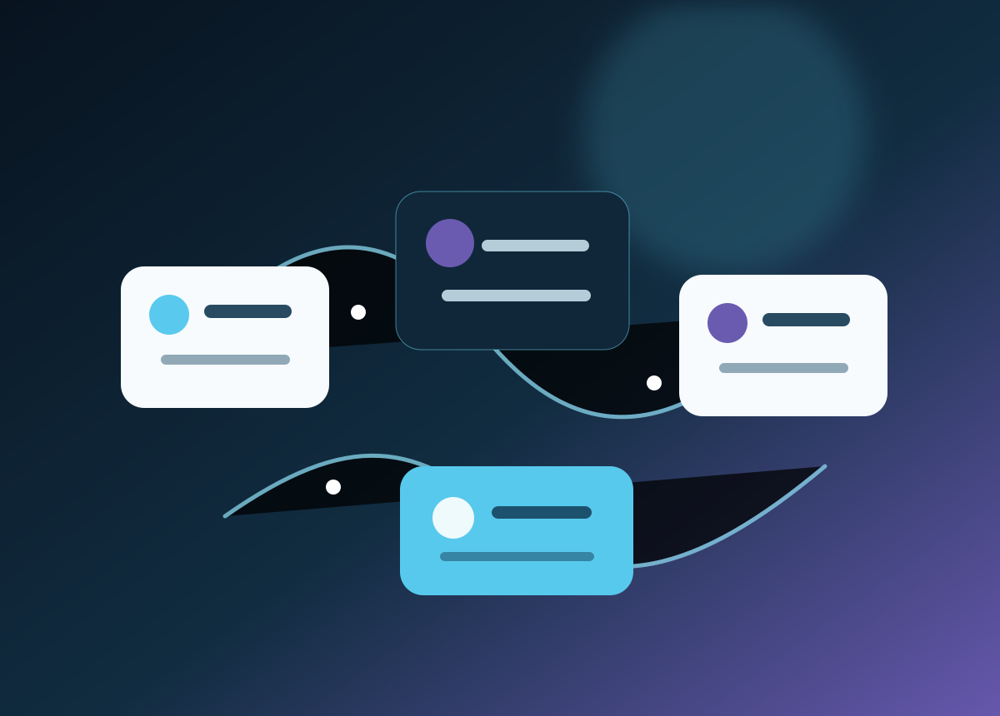

AI strategy, planning & research
Map user needs, tasks, available information, constraints and success measures. Compare AI, automation and non-AI options before selecting a pilot.
From the first AI opportunity assessment to a connected product feature, knowledge assistant or automated workflow, VSN helps scope, design, build, test and improve AI-enabled systems around your business and its data.

We first check whether AI is the right tool. A conventional workflow, better search, cleaner data or a small rule-based automation may be safer and less costly for some jobs.
Map user needs, tasks, available information, constraints and success measures. Compare AI, automation and non-AI options before selecting a pilot.
Integrate AI into an existing website, mobile app, SaaS product or internal tool, with scoped UX, API boundaries, access rules and operational ownership.
Make approved documents and knowledge easier to search through semantic or hybrid retrieval, citations or source links where supported, permission-aware results and clear fallback paths.
Build website or internal assistants for FAQs, guided discovery, triage, order or account workflows, with hand-off to a person when confidence or permissions are insufficient.
Connect intake, classification, summaries, draft responses, record creation and notifications across approved business systems. Define which steps can run automatically and which need sign-off.
For bounded tasks, connect a model to selected functions or APIs, constrain the available actions, validate inputs and outputs, and record actions for review.
Extract, classify, summarize or route information from documents and forms, then add schema checks, exception queues and review for uncertain records.
Assess whether structured data and a defined decision can support recommendations, categorization, forecasting or prioritization, with a baseline and measurable error trade-offs.
Design user journeys and system boundaries; map source data, retrieval, model calls, integrations, storage, permissions, observability and deletion paths before implementation.
Support research synthesis, drafting and structured content operations with source handling, editorial controls, attribution expectations and review before publication.
Create representative examples and acceptance criteria; test relevance, factual grounding, safety, format, tool actions, edge cases, latency and cost against a baseline.
Integrate model APIs and business tools, monitor failures and usage, route exceptions, and improve prompts, retrieval or workflow rules through an approved change process.
AI delivery is an iterative product lifecycle. The project plan records the intended task, who may be affected, data and model dependencies, owners and agreed checks.
Understand the workflow, users, pain points and desired outcome. Set a baseline and decide what success would look like before an AI feature is selected.
Review representative, authorized data; quality, sensitivity, rights, access and retention; plus model suitability, cost, response time and a non-AI fallback.
Define user journeys, system boundaries, model and tool access, data flow, human approval points, records, failure states and operational ownership.
Test a bounded use case, then connect approved data and systems using scoped credentials, least-privilege access and secure server-side patterns where applicable.
Run agreed test scenarios, review output quality and unwanted behavior, validate actions and measure latency, reliability and usage costs before release.
Use a staged release where appropriate. Assign an owner, review failures and user feedback, watch provider changes and define how to pause or roll back.
Each proposal can document intended use, approved data, user permissions, third-party dependencies, human oversight, evaluation criteria, cost assumptions and response to errors. Sensitive or regulated data is only included when the client has authority and the chosen providers and configuration are approved for that use.
AI-assisted updates can be prepared as a draft or proposed change, then checked and approved through your release process. Changes to models, prompts, knowledge sources or integrations should be versioned, tested and attributable; no system silently changes its own production instructions.
AI outputs can be incomplete, out of date or incorrect. We design scope-specific validation, source visibility, confidence handling, escalation and human review. AI is not used as an unreviewed substitute for professional judgement in tax, legal, medical, hiring, financial or other consequential decisions.
External model providers have their own capabilities, terms, availability, retention settings and pricing. These are checked and documented for the selected implementation; provider fees are separate unless agreed in writing.
Start with a clearly bounded requirement. The engagement can stay as a feasibility assessment or continue into a working product feature and support plan.
Prioritized use cases, workflow map, data-readiness questions, risk and provider considerations, success measures and a recommended pilot scope.
Approved sources, indexed content, search or Q&A experience, access design, response checks, source references where available and a human escalation path.
AI prepares a summary, classification or draft inside an existing workflow. Staff review before an external message, record change or consequential action.
AI capability embedded within an existing web, mobile or SaaS product, scoped against current architecture, roles, performance and support needs.
Automate a repeatable sequence across approved systems, with deterministic checks, exception queues, clear action limits and a route to pause.
A test set, quality review, operational measures and backlog of changes that can be assessed before implementation.
Share the workflow, audience, approved sources and systems. A clear, bounded use case is enough to start.
This form prepares a WhatsApp draft; it does not send to a VSN website server. Do not include credentials, identity records, customer data or confidential content. See the Privacy Policy.
Final provider, architecture, evaluation and operating details are confirmed in the written scope.
It means considering AI as one possible product or workflow capability from planning through operation. The deliverable may be an AI-enabled feature, an integration, conventional software or a mix, depending on feasibility.
Yes, we can scope assistants, retrieval-based search and bounded tool-using workflows. Data access, permissions, failure handling and human oversight are designed for the specific use case.
We can design a draft-and-review flow or narrowly approved automation. Production content, model instructions and consequential system changes should follow a controlled, attributable approval process.
It depends on the use case. Search or document workflows may start from approved existing content; predictive or classification models may need structured, representative records. Discovery will identify gaps and alternatives.
We agree examples and acceptance measures, test edge cases and failure routes, review results, and decide whether human review or a fallback is required. No AI system is guaranteed error-free.
Provider, infrastructure, storage and usage fees are identified separately in the proposal unless explicitly included. Actual costs depend on the selected provider, configuration and usage.
Where access, APIs and architecture allow, we can assess integrations with your existing website, app, CRM, help desk, knowledge base or internal tools. Feasibility is confirmed before commitments.
Ongoing monitoring, evaluation, provider-change review, incident handling and improvement can be scoped as continuing support with clear responsibilities.